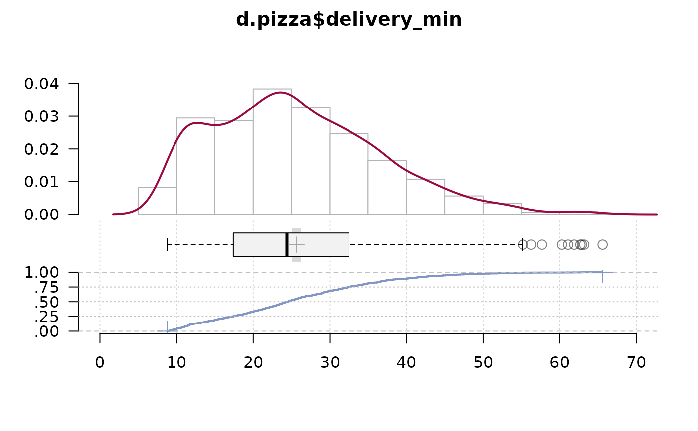
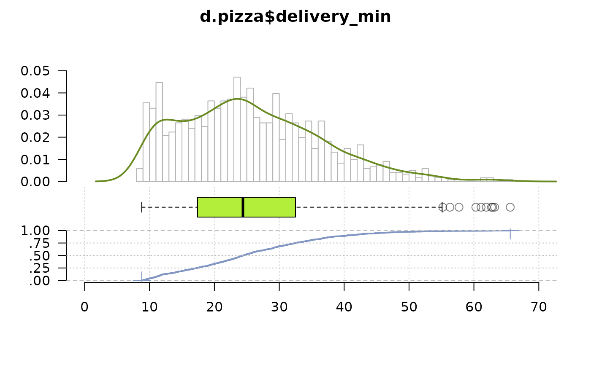
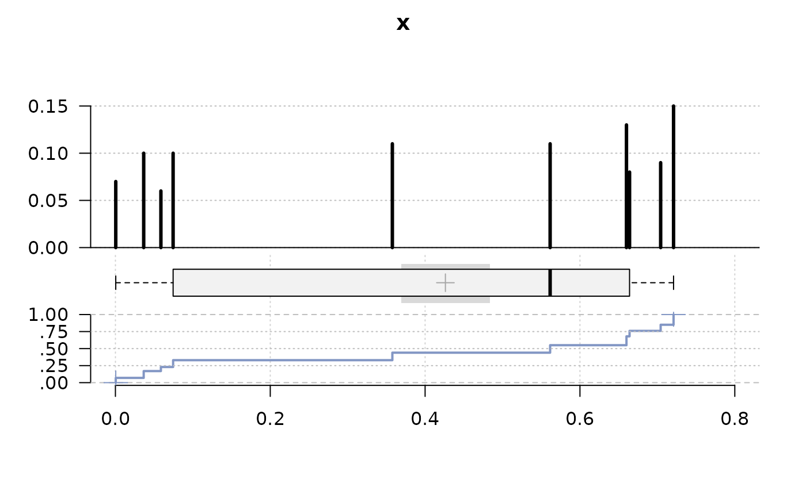
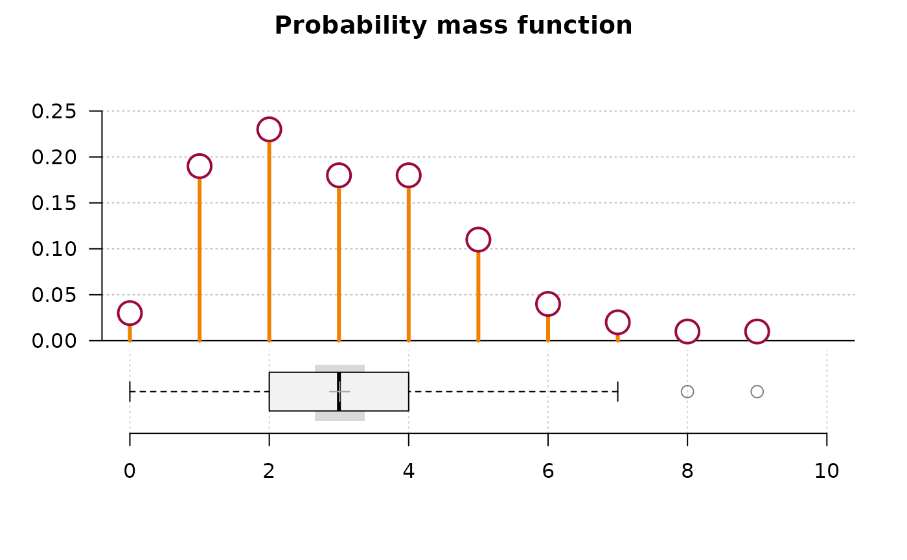
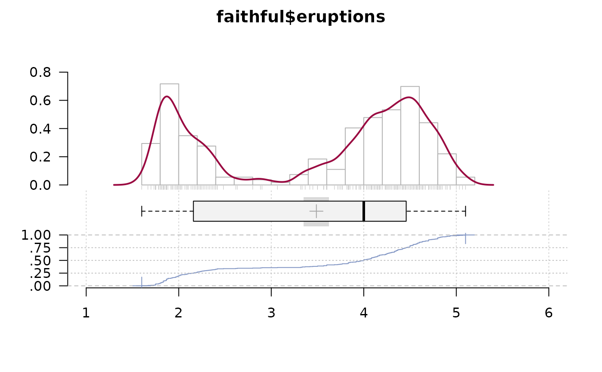
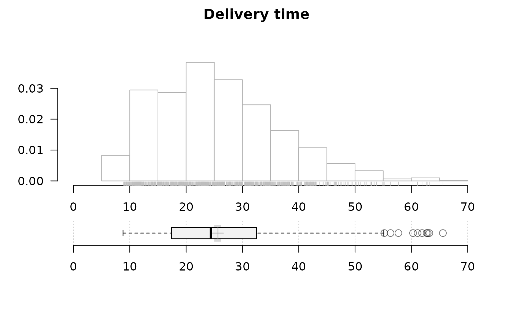
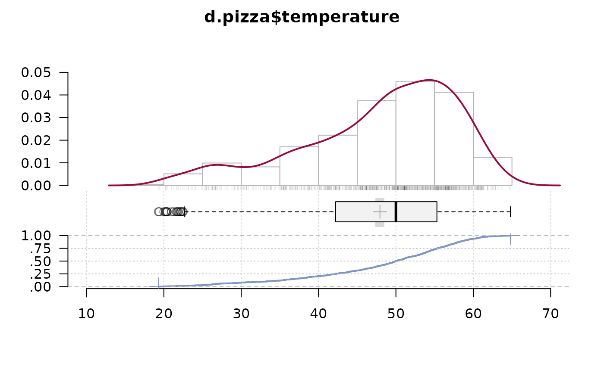
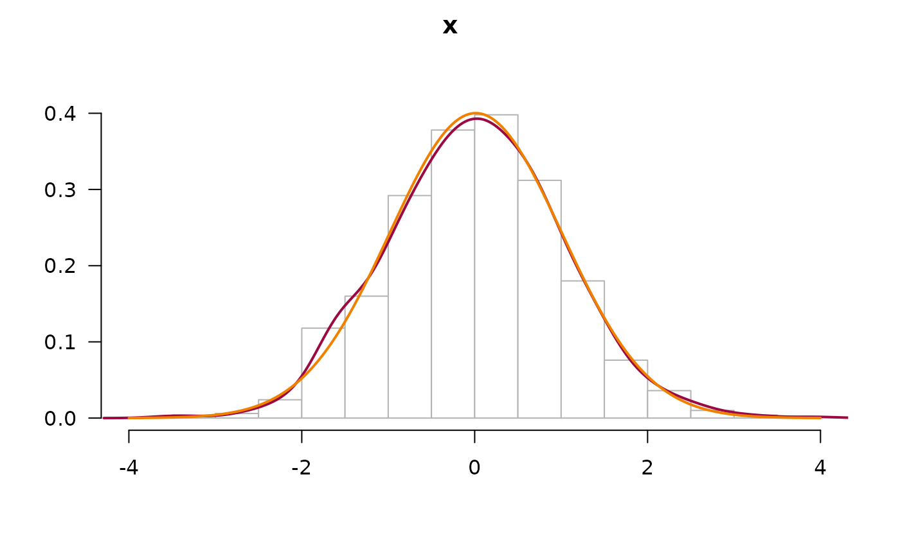
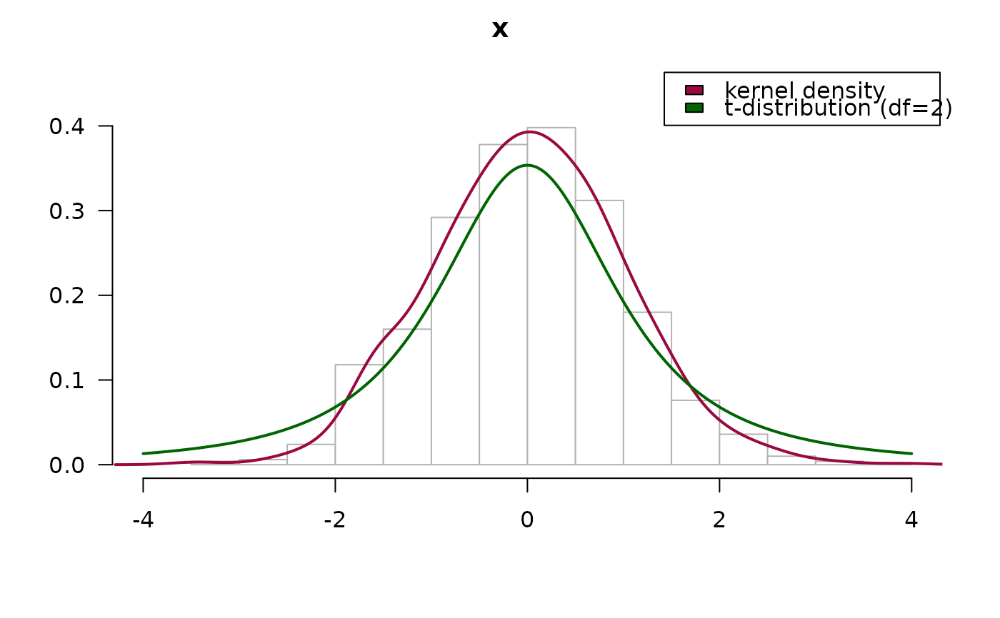
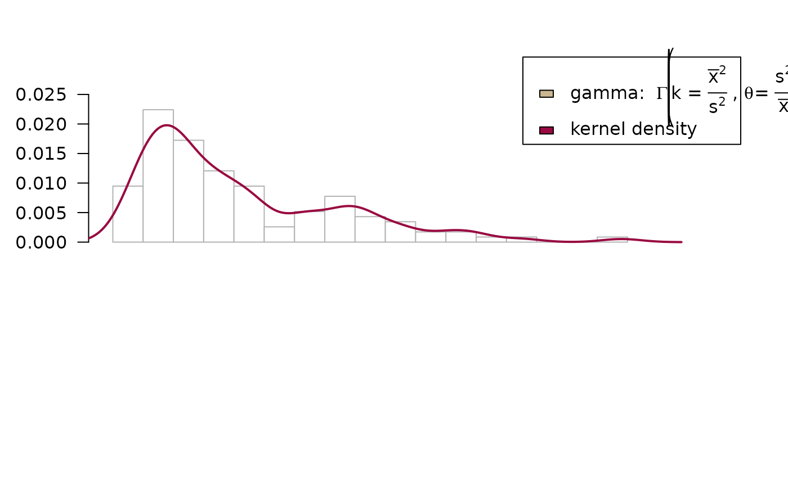

PlotFdist.RdThis function is designed to give a univariate graphic representation of a numeric vectors frequency distribution.
It combines a histogram, a density curve, a boxplot and the empirical cumulative distribution function (ecdf) in one single plot. A rug as well as a model distribution curve (e.g. a normal curve) can optionally be superposed. This results in a dense and informative picture of the facts.
Still the function remains flexible as all possible arguments can be passed to the single components (hist, boxplot etc.) as a list (see examples).
PlotFdist(x, main = deparse(substitute(x)), xlab = "", xlim = NULL, args.hist = NULL, args.rug = NA, args.dens = NULL, args.curve = NA, args.boxplot = NULL, args.ecdf = NULL, args.curve.ecdf = NA, heights = NULL, pdist = NULL, na.rm = FALSE, cex.axis = NULL, cex.main = NULL, mar = NULL, las = 1)
| x | the numerical variable, whose distribution is to be plotted. |
|---|---|
| main | main title of the plot. |
| xlab | label of the x-axis, defaults to |
| xlim | range of the x-axis, defaults to a pretty |
| args.hist | list of additional arguments to be passed to the histogram |
| args.rug | list of additional arguments to be passed to the function |
| args.dens | list of additional arguments to be passed to |
| args.curve | list of additional arguments to be passed to |
| args.boxplot | list of additional arguments to be passed to the boxplot |
| args.ecdf | list of additional arguments to be passed to |
| args.curve.ecdf | list of additional arguments to be passed to |
| heights | heights of the plotparts, defaults to |
| pdist | distances of the plotparts, defaults to |
| na.rm | logical, should |
| cex.axis | character extension factor for the axes. |
| cex.main | character extension factor for the main title. Must be set in dependence of the plot parts in order to get a harmonic view. |
| mar | A numerical vector of the form |
| las | numeric in 0,1,2,3; the style of axis labels. See |
Performance has been significantly improved, but if x is growing large (n > 1e7) the function will take its time to complete. Especially the density curve and the ecdf, but as well as the boxplot (due to the chosen alpha channel) will take their time to calculate and plot.
In such cases consider taking a sample, i.e. PlotFdist(x[sample(length(x), size=5000)]), the big picture of the distribution won't usually change much.
.
PlotFdist(x=d.pizza$delivery_min, na.rm=TRUE)# define additional arguments for hist, dens and boxplot # do not display the mean and its CI on the boxplot PlotFdist(d.pizza$delivery_min, args.hist=list(breaks=50), args.dens=list(col="olivedrab4"), na.rm=TRUE, args.boxplot=list(col="olivedrab2", pch.mean=NA, col.meanci=NA))# do a "h"-plot instead of a histogram for integers x <- sample(runif(10), 100, replace = TRUE) PlotFdist(x, args.hist=list(type="mass"))pp <- rpois(n = 100, lambda = 3) PlotFdist(pp, args.hist = list(type="mass", pch=21, col=horange, cex.pch=2.5, col.pch=hred, lwd=3, bg.pch="white"), args.boxplot = NULL, args.ecdf = NA, main="Probability mass function")# special arguments for hist, density and ecdf PlotFdist(x=faithful$eruptions, args.hist=list(breaks=20), args.dens=list(bw=.1), args.ecdf=list(cex=1.2, pch=16, lwd=1), args.rug=TRUE)# no density curve, no ecdf but add rug instead, make boxplot a bit higher PlotFdist(x=d.pizza$delivery_min, na.rm=TRUE, args.dens=NA, args.ecdf=NA, args.hist=list(xaxt="s"), # display x-axis on the histogram args.rug=TRUE, heights=c(3, 2.5), pdist=2.5, main="Delivery time")# alpha channel on rug is cool, but takes its time for being drawn... PlotFdist(x=d.pizza$temperature, args.rug=list(col=SetAlpha("black", 0.1)), na.rm=TRUE)# plot a normal density curve, but no boxplot nor ecdf x <- rnorm(1000) PlotFdist(x, args.curve = NULL, args.boxplot=NA, args.ecdf=NA)# compare with a t-distribution PlotFdist(x, args.curve = list(expr="dt(x, df=2)", col="darkgreen"), args.boxplot=NA, args.ecdf=NA)legend(x="topright", legend=c("kernel density", "t-distribution (df=2)"), fill=c(getOption("col1", hred), "darkgreen"), xpd=NA)# add a gamma distribution curve to both, histogram and ecdf ozone <- airquality$Ozone; m <- mean(ozone, na.rm = TRUE); v <- var(ozone, na.rm = TRUE) PlotFdist(ozone, args.hist = list(breaks=15), args.curve = list(expr="dgamma(x, shape = m^2/v, scale = v/m)", col=hecru), args.curve.ecdf = list(expr="pgamma(x, shape = m^2/v, scale = v/m)", col=hecru), na.rm = TRUE, main = "Airquality - Ozone")#> Error in dgamma(x, shape = m^2/v, scale = v/m): object 'm' not foundlegend(x="topright", xpd=NA, legend=c(expression(plain("gamma: ") * Gamma * " " * bgroup("(", k * " = " * over(bar(x)^2, s^2) * " , " * theta * plain(" = ") * over(s^2, bar(x)), ")") ), "kernel density"), fill=c(hecru, getOption("col1", hred)), text.width = 0.25)